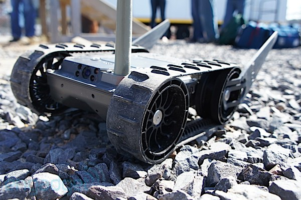
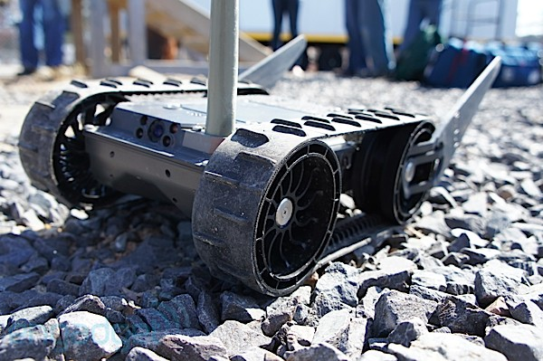
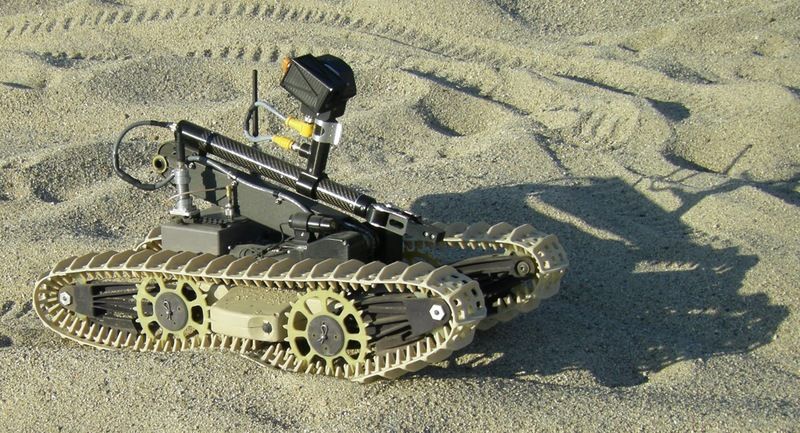
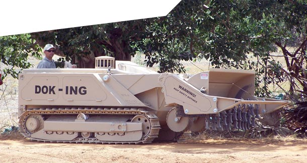
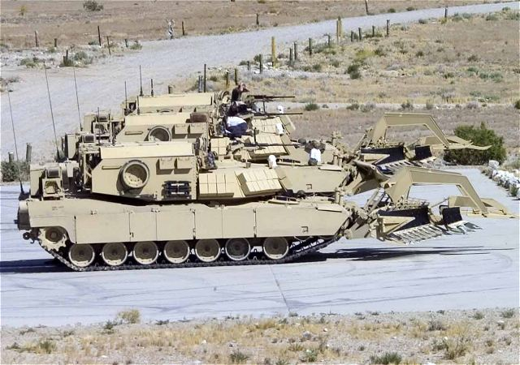
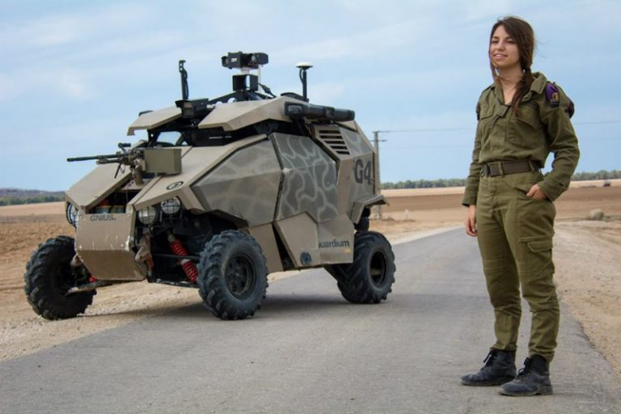
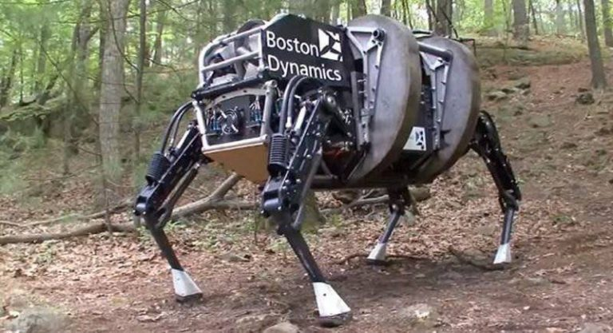

Применение роботов в военной сфере
При упоминании военных роботов первое, что приходит в голову, это антропоморфные роботы-терминаторы из фантастических фильмов. Они обладают собственным интеллектом и могут действовать автономно от человека. Однако это не соответствует действительности. Военные роботы в наши дни – это автоматизированные или дистанционно управляемые платформы.
Современных наземных военных роботов можно разделить на следующие группы:
- разведывательные
- инженерные
- боевые
- тыловые
Разведка
Автоматизированные системы давно используются для сбора разведданных, поиска целей и целеуказания, наблюдения за обстановкой. Одним из самых миниатюрных роботов-разведчиков, используемых сегодня армией США в Афганистане, является Recon Scout. Он имеет вес 1,3 кг и длину 200 мм, оборудован обычной и инфракрасной камерой. Этого робота можно забрасывать за препятствия, но передвигаться он может только по сравнительно ровной поверхности.
 

Еще одним представителем группы роботов-разведчиков является First Look 110. Он весит 2,5 кг, имеет гусеницы и управляется с пульта, размещенного у оператора на запястье. Робот оснащен четырьмя камерами и может преодолевать небольшие препятствия. На него можно устанавливать другие датчики: тепловизоры, индикаторы биологического, химического и радиационного заражения.
MINIBOT - четырехколесный робот-видеокамера, созданный для обеспечения безопасности, проведения исследований и наблюдений.
Видео демонстрирует работу MINIBOT в сложных и опасных средах.
Инженерия
Это еще одна обширная группа механизмов, которыми обычно управляют дистанционно. Инженерные роботы используются для обезвреживания мин и фугасов, создания проходов в минных полях, подъема тяжестей и расчистки завалов.
Важной тенденцией в развитии подобных машин стало увеличение их массы, что позволило привлекать дистанционно управляемые машины для более серьезных работ. В США сейчас все инженерные машины управляются дистанционно.
Типичным примером подобной техники является инженерная машина MV-4 (или М160). Ее масса составляет 5,32 т, она имеет гусеничное шасси и используется для обезвреживания боеприпасов и мин на глубине до 320 мм. Управлять MV-4 можно с дистанции в два километра, что делает работу саперов полностью безопасной.
Еще более тяжелой инженерной машиной с дистанционным управлением является ABV (Assault Breacher Vehicle), которая по своей массе и броневой защите сравнима с американским ОБС «Абрамс». ABV оборудована минным тралом и зарядами для разминирования, она может ставить дымовые завесы. Сейчас в США работают над полностью автономной модификацией машины.
Боевые роботы
Эта группа наземных автоматизированных машин пока еще развита не слишком. Современный бой очень сложен, скоротечен, решения нужно принимать моментально, быстро менять свою позицию. Все это у современных автоматизированных систем пока получается не очень хорошо.
Одним из наиболее известных боевых автономных систем является израильский беспилотный автомобиль Guardium, которые используется для несения патрульной службы, охраны и сопровождения колон, а также для ведения разведки. Автомобиль создан на шасси багги, имеет хорошую скорость и проходимость, на него можно устанавливать оружие. В 2009 году Guardium был принят на вооружение Армии обороны Израиля.
Тыловые роботы
Отдельной группой идут роботы, которые используются для перевозки грузов, в том числе и в районе боевых действий. Подобные системы должны сопровождать бойцов и перевозить часть боекомплекта, тяжелое вооружение или другие грузы. Почти все подобные роботы могут выполнять и дополнительные функции: разведки или эвакуации раненых.
Примерами подобных машин являются SMSS, R-Gator и TRAKKAR. Отдельно стоит упомянуть американский робот-носильщик BigDog, который передвигается на четырех конечностях и теоретически может пройти там, где не способна передвигаться колесная техника. Но эта разработка пока является экспериментальной.
